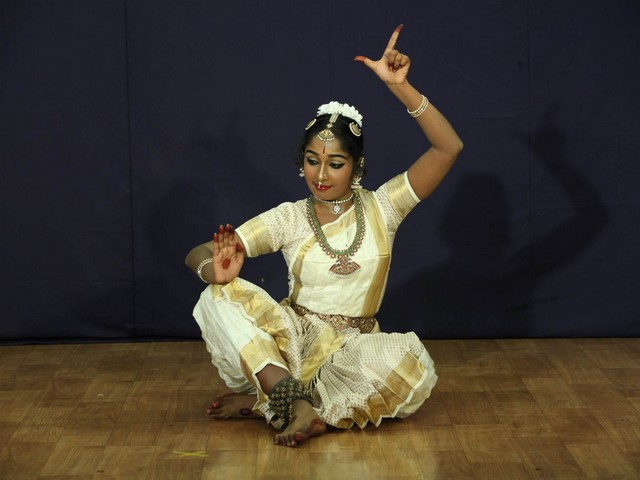

India is a land of diversities. Various climatic conditions have made India a diverse country. In all spheres of
Indian life diversities are clearly visible. These diversities have made the Indian culture a unique one. Like
all other aspects of life, the dance forms of India are also varied and different. There are many types of dance
forms in India, from those which are deeply religious in content to those which are performed on small
occasions.
The Indian dances are broadly divided into Classical dances and folk dances. The Classical dances of India are
usually spiritual in content. Though the folk dances of India are also spiritual and religious in content but
the main force behind the folk dances of India is the celebratory mood. Dances are a form of coherent expression
of human feelings. Like the Indian culture, Indian classical dances are equally diverse in nature. There are
numerous classical dance forms in India and innumerable folk dances. Each dance form can be traced to different
parts of the country. Each form represents the culture and ethos of a particular region or a group of people
The most popular classical dance styles of India are Bharatnatyam of Tamil Nadu, Kathakali and Mohiniattam of
Kerala, Odissi of Orissa, Kathak of Uttar Pradesh, Kuchipudi of Andhra Pradesh and Manipuri of Manipur.

Bharatnatyam
Bharatnatyam Dance is considered to be over 2000 years old. Bharatnatyam dance is known to be
ekaharya,
where one dancer takes on many roles in a single performance. In the early 19th century, the famous
Tanjore Quartette, under the patronage of Raja Serfoji are said to have been responsible for the
repertoire of Bharatnatyam dance as we see it today. The style was kept alive by the devadasis, who
were
young girls 'gifted' by their parents to the temples and who were married to the gods. The devadasis
performed music and dance as offerings to the deities, in the temple courtyards. On the gopurams of
the
Chidambaram temple, one can see a series of Bharatnatyam poses, frozen in stone as it were, by the
sculptor.
Kathak
The word Kathak has been derived from the word Katha which means a story. Kathakars or
story-tellers, are people who narrate stories largely based on episodes from the epics, myths and
legends. What perhaps started as an oral tradition, later incorporated mime and gestures, to make
the recitation more effective. Thus evolved a simple form of expressional dance, providing the
origins of what later developed into Kathak as we see it today.
Kathakali
Kerala is the home of several traditional dance and dance - drama forms, the most notable being
Kathakali. Kathakali is an art which has evolved from many social and religious theatrical forms
which existed in the southern region in ancient times. Chakiarkoothu, Koodiyattam, Krishnattam and
Ramanattam are few of the ritual performing arts of Kerala which have had a direct influence on
Kathakali in its form and technique. Legend has it that the refusal of the Zamorin of Calicut to
send his Krishnattam troupe to Travancore, so enraged the Raja of Kottarakkara, that he was inspired
to compose the Ramanattam. In the temple sculptures in Kerala and the frescoes in the Mattancheri
temple of approximately the 16th century, Kathakali dance scenes can be seen.
Kuchipudi
Kuchipudi is one of the classical styles of Indian dance. The art form takes its name from the
village of the birth, in the Krishna district of Andhra Pradesh. In the 17th century Kuchipudi style
of Yakshagaana was conceived by Siddhendra Yogi. It is said that Siddhendra Yogi had a dream in
which Lord Krishna asked him to compose a dancedrama based on the myth of the bringing of paarijaata
flower for Sathyabhaama, the most beloved queen of Krishna. In compliance with this command
Siddhendra Yogi composed the Bhaamaakalaapam. The progenitor of the form, presented a dance-drama
with young boys from the village. To show the dexterity of the dancers in footwork and their control
and balance over their bodies, techniques like dancing on the rim of a brass plate and with a
pitcher full of water on the head was introduced. By the middle of this century, Kuchipudi fully
crystallized as a separate classical solo dance style.
Manipuri
Manipuri, one of the main styles of Indian Classical Dances, originated in the picturesque and
secluded state of Manipur in the north-eastern corner of India. The origin of Manipuri dance can be
traced back to ancient times. The dance is associated with rituals and traditional festivals, with
legendary references to the dances of Shiva and Parvati and other gods and goddesses. Manipur dance
has a large repertoire, however, the most popular forms are the Ras, the Sankirtana and the
Thang-Ta. It was in the reign of King Bhagyachandra, in the 18th century, that the popular Rasleela
dances of Manipur originated. It is said, that the King conceived this complete dance form along
with its unique costume and music in a dream. In Manipuri Ras, the main characters are Radha,
Krishna and the gopis. Today, Manipur has an evolved and sophisticated repertoire of martial dances,
the dancers use swords, spears and shields. Real fight
Odissi
Odisha, on the eastern sea coast, is the home of Odissi, one of the many forms of Indian classical
dance. Sensuous and lyrical, Odissi is a dance of love and passion touching on the divine and the
human, the sublime and the mundane. Archaeological evidence of this dance form dating back to the
2nd century B.C. is found in the caves of Udayagiri and Khandagiri near Bhubaneshwar. For centuries,
maharis, the temple dancers, were the chief repositories of this dance. The dancer is adorned in
elaborate Odiya silver jewellery and a special hair-do. In each performance, even a modern Odissi
dancer still reaffirms the faith of the devadasis or maharis where they sought liberation or moksha
through the medium of dance.
Mohiniyattam
Mohiniyattam literally interpreted as the dance of ‘Mohini’, the celestial enchantress of the Hindu
mythology, is the classical solo dance form of Kerala. According to a Puranic story, Lord Vishnu
took on the guise of a ‘Mohini’ to seduce the Asuras, both in connection with churning of the ocean
and episode of the slaying of Bhasmasura. It traces its origin to the temples of Kerala.
Mohiniyattam is characterized by graceful, swaying body movements. It belongs to the lasya style
which is feminine, tender and graceful. The delicate body movements are emphasized by the glides and
the up and down movement on toes, like the waves of the sea and the swaying of the coconut, palm
trees and the paddy fields.
Ahiri Dance
Ahiri Dance belongs to the cattle herding groups of Gwalior. While performing the Ahiri dance the
performers make charming moves. As an important part of the culture of Gwalior, the Ahiri dance is
known to have a bright and vibrant heritage.
Ghoomar Dance
The Ghoomar dance is primarily performed by the female folk of Jaisalmer on special festive
occasions.
Kathputli Dance
Representing the unique cultural traditions of Jaisalmer, the Kathputli dance reflects the artistic
imagination of the organizers of the show who creatively arrange a dance drama of puppets for the
entertainment of the audience.
Santhali Dance
This folk dance not only projects the culture or traditions of the local tribes but also showcases
the strength of unity. Through this dance form, the dancers express one's feelings, some story,
issues or any other event.
Bihu Dance
This folk dance is the most celebrated dance of the state and is also one of the main attractions
for tourists. Both womenfolk and menfolk take part in this cheerful dance. The performers wear
traditional costumes in different colors. The dancers sway their bodies gracefully to the rhythm of
Bihu folk music sung by both men and women.
Chhau Dance
It is one of the finest folk dances of Chhota Nagpur Plateau region. The folk dance is performed in
various states that lie in this region such as West Bengal, Bihar, Orissa and Jharkhand. The word
Chhau is derived from the Sanskrit word Chhaya which implies shade, image, or mask. Chhau of
Jharkhand is a very beautiful dance form where the dancers cover their faces during the dance with a
mask and it is this mask that attracts your attention towards the dance.
Sattriya Dance
This is one of the famous classical dances of Assam. Through this dance, the performers narrate
mythological stories. In monasteries, it is performed every day by male monks. The dance is
performed in conjunction with music called 'borgeets' which are based on classical ragas.
.jpeg)
.jpeg)
.jpeg)
.jpeg)
.jpeg)
.jpeg)
.jpeg)
.jpeg)
.jpeg)
.jpeg)
.jpeg)
.jpeg)
.jpeg)